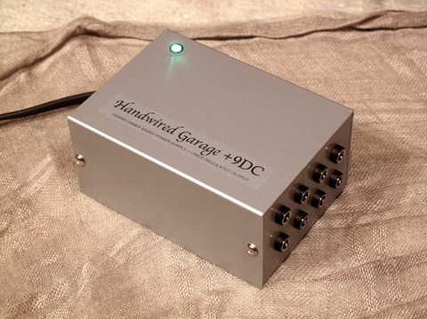
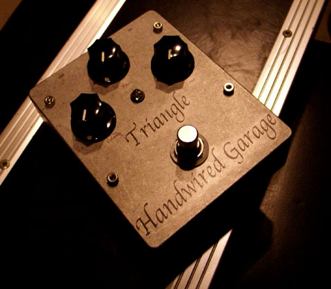

レコーディング機材
2017/01/06 現在
機材名をクリックタップすると機材の仕様及び詳細を確認することができます。
| Microphone | ||
|---|---|---|
| Condencer | Dynamic | Velocity |
|
RTT (Bottle Type) Microtech Gefell UM92.1S (Custom by HWG) Rode Classic 2 Rode NT2 (Custom by HWG) (2本) Langevin CR-3A (3本) Milab VM-44 (2本) Milab DC-96B Audio Technica AT4031 (2本) Audio Technica AE3000 (2本) AKG C451E w/CK1 (2本) AKG C391 |
Audio Technica ATM-25 Audio Technica HYP-180B ElectroVoice PL80 (2本) ElecteoVoice N/D 408 (2本) Shure SM57 (8本) Shure SM58 (7本) Shure SM77 (6本) Shure SM78 (4本) Shure 565SD AUDIX D-2 (2本) |
Toshiba B type |
| MicPreAmp |
|---|
|
GRACE DESIGN m201 Factory (micpre+ADC) spl Frontliner Model 2800 (channel strip) conisis MAPP-1212 TAMURA Presonus MP20 (Custom by HWG) Presonus M80 Peavey VMP-2 (Custom by HWG) STAX model MA-1 Forcusrite Green2 |
| Analog Effecter | |
|---|---|
| Compressor | Other |
|
Chandler Limited LTD-2 Mastering Pair DBX 160SL DBX 160XT (Custom by HWG) Anthony Demaria Labs ADL1000 (Custom by HWG) Summit Audio TLA50 |
Electrix Filter Queen |
| Digital Effecter | ||
|---|---|---|
| Reverb | Delay | Other |
|
YAMAHA ProR3 (2台) Roland SRV-330 |
LINE6 EchoPro (2台) |
Chandler Limited GERMANIUM DRIVE (OverDrive) |
| Mixing Console |
|---|
|
Mackie SR24・4 VLZ-PRO Mackie MS1202 VLZ Tascam M-08 YAMAHA MG10/2 |
| Recorder/Processor |
|---|
|
t.c.electronic Finalizer TASCAM DV-RA1000 KORG MR-1 |
| Monitor System |
|---|
|
YAMAHA MSP7 TEAC UD-301 (DAC/Headphone Amp) SONY SMS-1P |
| Other |
|---|
|
Ex-pro BP-500 (Bass PreAmp/All Tube) Radial JDI mk-3 (Custom by HWG) (D.I.Box) Radial J48 mk-2 (Custom by HWG) (D.I.Box) Radial PRO D2 (Custom by HWG) (Stereo D.I.Box) ROSENDAHL nanosyncs (Master Clock Generator) |
| Recording System | |
|---|---|
| DAW (ProTools 2018) | StandAloneRecorder |
|
Apple Mac Pro (2.93G×12/32GB) MOTU 24Ai/24Ao ProTools 2018 |
Fostex D2424LV Fostex AC2496 |
音響システム
メインコンソール
・YAMAHA 02R96 Ver2
メインスピーカー
・YAMAHA DSR215 2本 (Powered)
サブウーハー
・YAMAHA DSR118W (Powered)
モニタースピーカー
・YAMAHA SM12V 2本 (フロアモニター、PowerAmp YAMAHA PC3301N)
・YAMAHA CBR10 2本 (天井吊り、PowerAmp YAMAHA PC3301N)
・YAMAHA DXR12 (ドラムモニター、Powered)
・YAMAHA SM10IV 2本 (フロアモニター予備設備、PowerAmp YAMAHA XP2500)
ステージ機材
ドラムセット
・YAMAHA OAK Custom / BD 22"/ FT16"/ LT 10"/ HT 8"
・スネアドラム / Pearl フリーフローティング、キャストアルミ / YAMAHA ステージカスタム 13"
ベースアンプ
・EDEN WT600 RodeRunner + EDEN D410 XLT8 + EDEN D118XL + ラックチューナー
・Ashdown MAG250 (250w、15インチスピーカのコンポアンプ)
ギターアンプ
・Marshall DSL + Marshall 1960A (キャビネット=16オーム専用)
・Roland JC-77
・Fender DeVille 212
・VOX AC-30 (現在調整中)
アップライトピアノ
・KAWAI K-50 (純アコースティックピアノ)
電子ピアノ、シンセ
・YAMAHA P-125 (88Key)
・Roland JUNO-DS (61Key)
貸し出し機材
ドラムセット (詳細)
アンプ類 (詳細)
アコースティックギター (詳細)
アップライトピアノ
・KAWAI K-30 (純アコースティックピアノ)
キーボード
・YAMAHA P-125 (ピアノタッチ88鍵)
・Roland JUNO-DS (61鍵)
Perfect Power Supply +9DC (プラスナインディーシー)

Handwired Garage +9DC は、真のオーディオクオリティーを持ったコンパクトエフェクター用電源です。
レコーディングスタジオで使用されて来たオリジナル電源を元に、信頼性と音楽性を高度に追求した設計です。
使用パーツは、ヒアリングテストによってセレクトされ、継続的なテストの末に生み出されています。
その結果、国産高性能トランスを始めとして、音響用コンデンサー、配線材に至るまで、徹底した高品位設計となっています。
標準仕様から、簡単なカスタマイズまで、使用者の環境に合わせて熟練のエンジニアが1台1台組み上げます。
出力: +9VDC、2.1ミリ標準DCジャック (センターマイナス) 8口
入力: 100VAC 50/60Hz
サイズ 幅125ミリ 奥行き90ミリ 高さ60ミリ (コード等を含まず。)
詳細はこちら
現在の納期＝即納(在庫僅少)
販売価格 14.800円(税別)
Legend Series
レジェンド・シリーズは、ビンテージペダルに敬意を表して製作された究極のペダルです。
あえて製作効率を捨て、吟味を重ねたパーツのみで組み上げています。
Legend Series の特徴
音質劣化の原因であるプリント基板を使用していない。
蛇の目基盤やラグ板を使って、全てのパーツを ポイント to ポイント 配線。
オペアンプICを一切使用しない、完全ディスクリート回路設計。
全てエンジニアの手による完全ハンドメイド。
トゥルーバイパス仕様。
♯1. "Triangle" Classic Fuzz

1971年発売の、初期型 BigMuff をモチーフとして、
Handwired Garage 独自の世界観を取り入れたモデル。
低音が暴れ、篭った雰囲気がある現行 BigMuff のイメージとは異なり、
抜けが良く、攻撃性が在りながら奥行きのある歪み。
ギターの種類を選ばず幅広く使える。
回路の主要パーツが殆ど1970-80年代製品の為、
パーツの入手が出来なくなった時点で生産は完了予定です。
受注生産になります。納期はお問い合わせ下さい。
販売価格 28.000円
「エレクトリックサウンドについての考察」
第1回 インピーダンスとバッファーの話
第2回 トゥルーバイパス神話について
第3回 アクティブとパッシブ
第4回 エフェクターの電源はそもそも重要なのか? その1 (予定)
第5回 エフェクターの電源はそもそも重要なのか? その2 (予定)
マイクロフォン。ギターアンプ。エフェクター。
ロック音楽の発展は、電気回路との関係なしには語れません。
エレクトリックサウンドの出現が、新しい音楽表現としてロックを生み出しました。
そして、新しいサウンドの発見が新しい表現を生むと言う構図は、現在においても変わっていません。
新しいサウンドとの出会いが、アーティストの感性と重なる時、そこには新しい表現が生まれるのです。
アーティストが貪欲なまでにサウンドを追求するのは、
現在においては、サウンドこそがひとつの表現であると言う事実の現れでもあります。
自分の求めるサウンドを具現化する為に、
専属のエレクトリック・エンジニアを擁したバンドも在りました。
ロックサウンドがエレクトリックサウンドである以上、
そのサウンドを自由に操るためには、電気に対する理解が必要なのです。
それは、時に専門性の高いものでした。
しかし現在では、ミュージシャンの要求は多種多様なツールとして形になり、製品として市場に溢れています。
専門的な電気の知識を得てハンダゴテを握ることよりも、
それらのツールの正しい使用方法を知ることが重要になりました。
しかし、その為の情報が少ないため、多くの人は感覚でそれを使いこなしているに過ぎません。
ここでは、レコーディング、ライブの現場で多くのエレクトリックサウンドと向かい合ってきた人間の立場で、
様々な機材に対して考察して行こうかと思います。
HandwiredGarage 今泉 貴輝